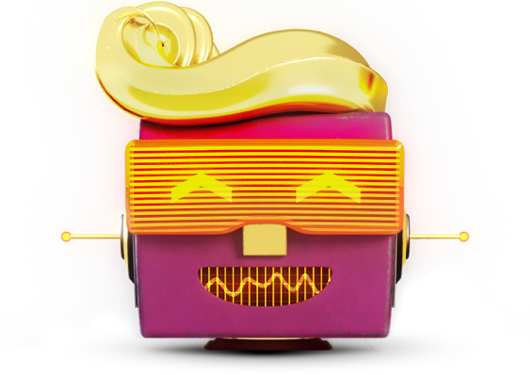

Klantenservice
Hoe kan ik je helpen?
hallo
Tele2 diensten
ga snel door naar:
waarmee kunnen we je helpen?
actuele vragen
-
ik heb een iPhone 14, 14 Plus, 14 Pro of 14 Pro Max besteld. Wanneer wordt hij geleverd?
ook dit jaar is er weer veel vraag naar de nieuwste iPhone modellen. Via de Tele2 Community houden we je op de hoogte van de laatste informatie omtrent de levertijden.
naar het levertijden topic op de Tele2 Community -
ik krijg sms'jes van een vreemd nummer met een rare link. Wat moet ik doen?
op dit moment verspreid zich een nieuwe malware voor Android toestellen. Het lijkt op een sms van een koeriersdient maar deze is fake! Je krijgt zogenaamd een pakketje en dan ben je nieuwsgierig. Er staat een link in het bericht voor de status van het pakket.
deze SMS is gerelateerd aan de FluBot SMS Malware campagne. Wanneer je op de link klikt en een Android telefoon hebt, is de kans heel groot dat deze geïnfecteerd raakt met malware en is de enige optie om deze te verwijderen de telefoon terug te zetten naar de fabrieksinstellingen.
ons advies: klik niet op de link in het bericht!
-
ik word steeds gebeld door onbekende buitenlandse nummers. Wat kan ik doen?
wat je vooral niet moet doen, is terugbellen! Het lijkt dan namelijk vaak alsof de telefoon heel lang overgaat zonder te worden opgenomen, maar in werkelijkheid krijg je een bandje te horen met het geluid van een overgaande telefoon. De kosten lopen hard op, want je belt naar een duur betaalnummer. Fraudeurs die zich schuldig maken aan wangiri-fraude verdienen hier hun boterham mee.
Wat je wél kunt doen, is zo'n onbekend nummer direct blokkeren. Dat kan gewoon via het menu van je mobiele telefoon, zie tele2.nl/toestelhulp voor een handleiding. Het vervelende is wel, dat de fraudeurs vaak meerdere nummers hebben waarmee ze bellen. Dat kan betekenen dat je dus langere tijd meerdere nummers moet blokkeren.
Je vraagt je misschien af hoe deze fraudeurs nu net aan jouw nummer komen. Dat is eigenlijk heel simpel; criminelen kunnen met software eenvoudig naar honderdduizenden nummers bellen. Deze nummers halen ze als hele reeksen (06-10000000 tot 06-99999999) van het internet af en dit kost ze niets.
Meer weten? Lees dan ook de informatie op de website van fraudehelpdesk.nl.
veelgestelde vragen
-
waarom is mijn factuur hoger dan ik had verwacht?
als je factuur hoger is dan je had verwacht, kan dat verschillende oorzaken hebben. Kijk hier of op MijnTele2, daar kun je je facturen downloaden en zie je waar de hogere kosten vandaan komen.
-
hoe vraag ik nummerbehoud aan?
met nummerbehoud van Tele2 kun je jouw mobiele nummer gratis behouden. Vraag direct nummerbehoud aan of bekijk eerst meer informatie over nummerbehoud.
-
waar kan ik mijn abonnement wijzigen?
via MijnTele2 en de Tele2 app kun je een heleboel dingen aan je abonnement veranderen en instellen. Zo pas je er makkelijk je gegevens aan. En kun je één keer per maand de databundel van je abonnement veranderen. Je ontvangt een e-mail ter bevestiging van je wijziging van je bundel. Daarnaast zie je dit terug in MijnTele2.